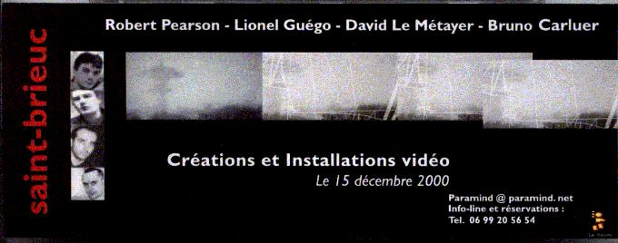

All work is copywritten 1985-2004
by R.S. Pearson
Click here
for R.S. Pearson music page. Major overhaul done on September 15, 2004.
Newly published: the book:"Philosophy and the Aesthetics of Virtue."
Newly published: the book:"Lushness of Soul."
We also include
computer-generated texts, a recent art form
among our
texts. Find here such works as
"Rubber Blue Biodegradable
Robot."
The Exhaustion of the
Interactions of Words. If we exhausted in meaningful ways the
interactions the words of our dictionary, would we come up with every
idea
possible for us? A collection of writings on the TWIE theory (telical
word-interaction
exhaustion). This is the theory by R.S. Pearson that is behind the
ParaMind program.
Support the innovative work on this site by buying a Registered Copy
of ParaMind Brainstorming Software. ParaMind is owned by R.S. Pearson,
the author of all the works on this site.
Novalis Online. Novalis is an 18th Century German Romanticist.
We are host of the Novalis e-mail discussion Group.
R.S. Pearson, the founder of Creative Virtue Press, is a writer/composer influenced by the French Surrealists
and studies of philosophy and spirituality. He is the creator of the
popular ParaMind
Brainstorming Program and the Emotive Virtuism art theories.
R.S. Pearson's main concern is
to bring the reader or listener to a state of regenerative beauty.

Recommended:
25 Tips to Help Those Facing a Serious Illness
Emotive Virtuism Art Theories
This links to the home page for a discussion on Emotive Virtuism, which is an aesthetic theory
developed by R.S. Pearson. It states that acts of virtue
produce
the aesthetic experience. That is, when you see someone doing something
especially
beneficial for someone, inside you feel something that is like when
you're in a great museum, and see a great work of art. Linking these two ideas together
in various implications is the motivation behind this artistic and
philosophical theory.
Biodegradable Technology
Other works we support are those surrounding Biodegradable
Technology. They describe that very possibly in the future we
will develop a technology from the fusion of electronics,
plant genetics, and other sciences which will be totally advanced
technologically but which will be very good for the earth, providing
fresh air in the process.
Computer-Generated Writing.
Para-Literature -- The Exhaustion of the
Interactions of Words
ParaMind Brainstorming Software
ParaMind Brainstorming
Software
ParaMind is a Windows and Mac program that is
great for
developing new logical ideas that we might not have found otherwise.
ParaMind is a fun and useful program. It was built by working with
the idea of getting every idea possible by the "exhaustion of
the interaction of words."
Beautific, Non-indentified and Entranced -- R.S. Pearson's
Prose and
Poetry
Here is Creative Virtue's Prose
and Poetry collection.
Miscellaneous Writings by R.S. Pearson
From Feb 26, 2001 to May 03, 2002 these web pages at eskimo.com alone received 63,898 hits!
Lionel Guego/Robert Pearson
exhibit in Quintin, France June 2000
A R.S. Pearson press release and some
photos.
How the Homeless Can Find a Home
Prayer Blaster -- Multiple Prayer Requests via One Page
A NEW WAY TO PROMOTE ART/WRITING/MUSIC/CREATIVITY
Mirror Sites:
www.rspearson.com
www.eskimo.com/~telical